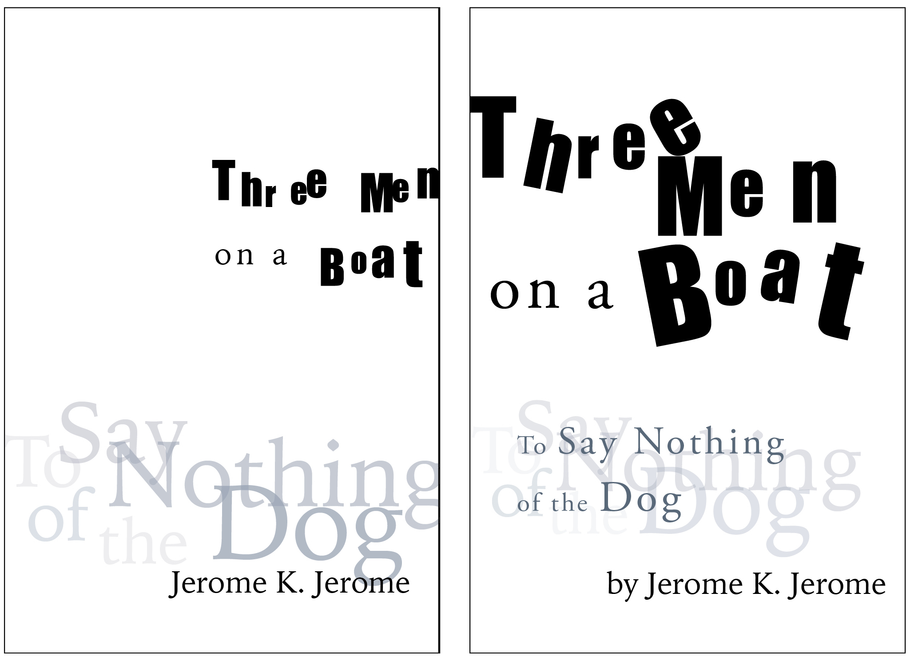
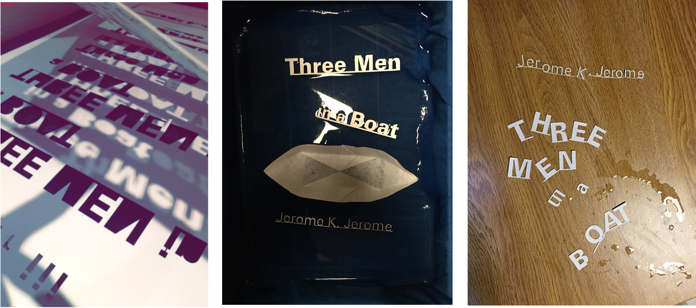
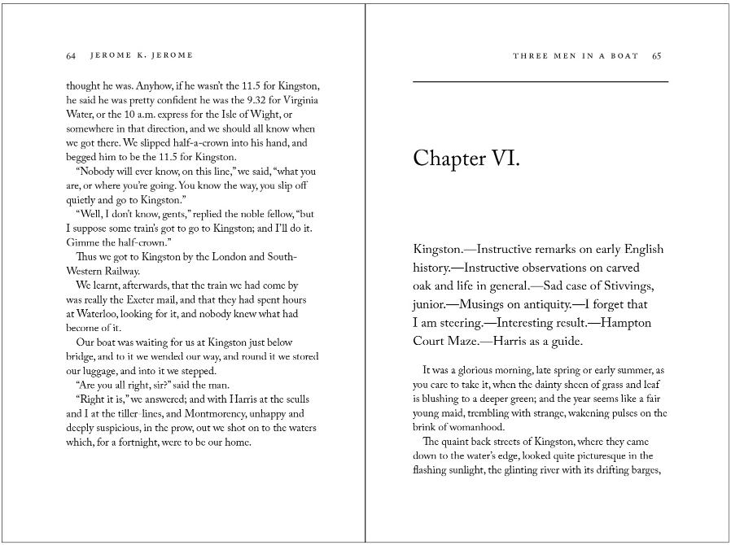

Typography 1 required the book cover design and text layout of a full novel. I chose Jerome K. Jerome's Three Men in a Boat. The cover visually reinforces the meaning of the title/book, while the typography inside promotes easy of reading. The paramaters of the project were wide.
The cover utalizes lazer-cut text floating in water. They were photographed and later altered with Photoshop masks. The different opacities create the illusion of sinkin/floating. Juxtaposed beside it is a paper boat.
In previous drafts, I worked with Photoshopped text. Words were warped to appear like a swaying boat and the translucent water it sits upon. Other drafts involved experimentation with physical materials, including lazer-cut text and water. In some cases, the letterforms broke apart and jumbled together as a natural response to the choice of materials.
The basic pages within the book required many iterations, in which I adjusted the page size, margins, typography, and more in order to improve readability. The final body text used 12.5 pt Adobe Caslon with 15.5 pt leading. I designed the frontmatter, chapter titles, and running heads to be dynamic yet consistent throughout.